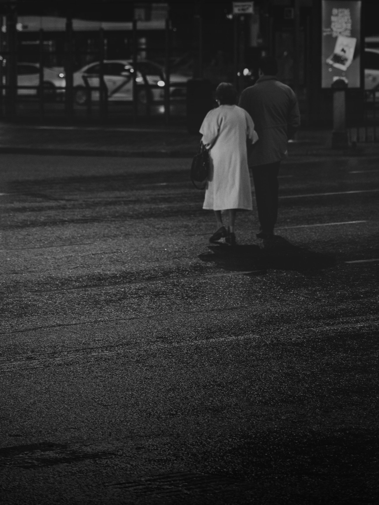

para llevar en el bolsillo▸ 00A · Mirar Despacio · Otto Kols · Madrid
▸ antes de salir
Hacemos cientos de fotos y miramos muy pocas. No es culpa de la cámara: es que vamos deprisa.
Estos ejercicios no te enseñan ajustes. Te proponen una manera de salir a la calle. Elige uno, sal con él y olvídate del resto. Vale cualquier cámara, también el móvil.
No hace falta hacerlos en orden ni hacerlos todos. Con uno a la semana tienes para un par de meses de mirar distinto.
Sal con un solo objetivo fijo, o con el móvil sin tocar el zoom, durante una hora. Si quieres algo más cerca, te acercas tú. Si no cabe, das un paso atrás.
Tus pies hacen el trabajo del zoom, y empiezas a pensar desde dónde miras.
Elige una esquina, una plaza o un portal y quédate veinte minutos. Haz diez fotos sin moverte más de unos metros.
Las primeras tres son las obvias. A partir de la cuarta empiezas a ver lo que no se ve.
Busca un fondo que te guste (una pared con luz, un cartel, un escaparate) y espera a que alguien pase por él. No persigas a nadie: deja que la calle venga.
Aprendes a prever en vez de reaccionar.
Durante un paseo, no fotografíes cosas: fotografía dónde cae la luz. Un rayo en una fachada, un charco brillante, una cara iluminada de lado.
La luz decide qué es importante en una foto antes que el tema.
Sal con la regla de hacer solo doce fotos, como un carrete corto. Antes de cada disparo, pregúntate por qué esa y no otra.
Cuando cada foto cuesta, miras mucho más antes de apretar.
Haz todo el paseo sin revisar ninguna foto. Ni una. Míralas al llegar a casa, con calma.
Dejas de corregir y empiezas a fiarte de tu mirada. Y la sorpresa al llegar a casa engancha.
Busca puertas, ventanas, huecos, reflejos o arcos que encuadren algo dentro de tu foto.
Ordena la imagen y lleva la mirada de quien la ve justo donde tú quieres.
Elige un color antes de salir (rojo, amarillo, verde…) y fotografía solo lo que lo tenga.
Te obliga a mirar la ciudad con un filtro, y encuentras cosas que siempre estaban ahí.
Una salida dedicada a las sombras: de personas, de farolas, de barandillas. Mejor a primera hora o al atardecer, cuando son largas.
Descubres formas que no existen cuando miras el objeto directamente.
Busca en tu móvil una foto que ibas a borrar. Antes de hacerlo, piensa qué te hizo pararte a hacerla. Vuelve al sitio, o a uno parecido, e inténtalo otra vez.
Casi siempre había algo. Esta vez sabes qué estás buscando.
▸ y después
Estos ejercicios nacieron en las salidas de Mirar Despacio: paseos en grupo por los barrios de Madrid, con retos parecidos y fotos que vemos juntos al final.
Salidas en grupo · aportación libre · mirardespacio.es/salidas
Talleres de noche, atardecer, composición e iniciación · mirardespacio.es/talleres
Mirar Despacio+ · un reto al mes y comunidad, también si no vives en Madrid · mirardespacio.es/mirar-despacio-plus
Si haces alguno, enséñamelo: etiqueta #mirardespacio en Instagram.